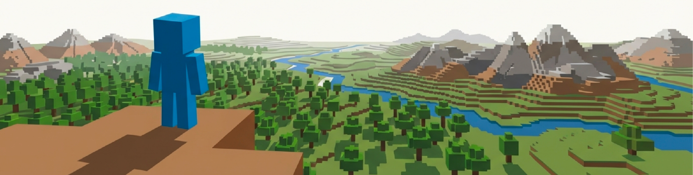
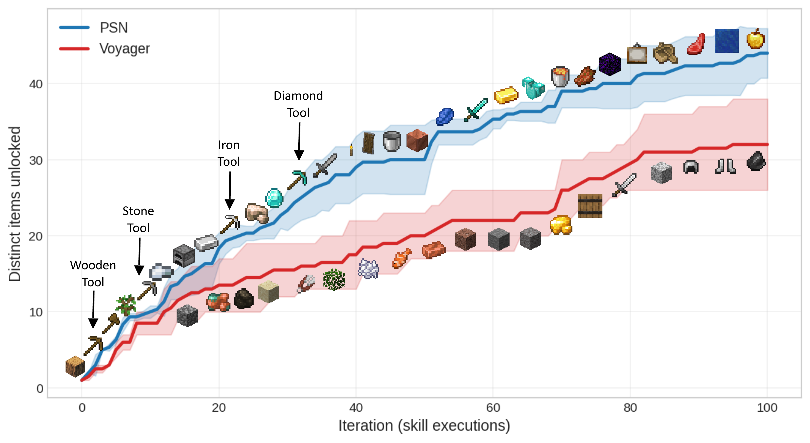

A continual-learning agent whose skill graph develops through mechanisms borrowed from neural-network training. It acquires, refines, and reuses a growing repertoire of skills in open-ended worlds, without forgetting what came before.
1Université de Montréal · 2Mila · 3Microsoft Research · 4Canada CIFAR AI Chair *Equal advising

Embodied agents must continually acquire, refine, and reuse a growing repertoire of skills. The central challenge isn't just learning skills, it's continually reorganizing and improving them in dynamic, open-ended environments, without forgetting what came before.
Today's LLM agents store skills as flat libraries (no composition) or static hand-built graphs (no learning), neither of which reorganizes as new tasks arrive. We've mastered learning in continuous, parameterized systems, so what if we applied the same optimization principles to a network of discrete, symbolic programs?
Skills indexed by similarity. Voyager-style. Cannot compose; new tasks don't decompose into existing skills.
Hand-authored library, fixed at design time. ODYSSEY-style (183 skills). No learning, reuses within its fixed repertoire, but cannot grow and adapt to novel tasks.
Skills as programs in a directed graph that continually reorganizes through symbolic updates as the agent learns.
credit flows along the activation path
REFLECT diagnoses each skill on the trace
freeze converged layers, keep new ones plastic
V(s) gates updates per skill
restructure topology to improve capacity
merge, extract, prune skills under rollback
The analogy is partial (PSN works over discrete programs and binary success signals), but the algorithmic structure of NN training transfers, and yields testable predictions that the paper verifies: chain-rule-like propagation depth, retention without oscillation, and stair-stepped structural growth.

On GPT-5-mini, PSN unlocks the diamond tools in 32 ± 10 iterations across 6/6 runs (44 ± 13 on Qwen3-Coder-Next); a flat-library agent (Voyager) reaches them in 1–2/6. The paper reports the full picture: Crafter cumulative reward, per-milestone skill retention, and the complete baseline comparison (ReAct, Reflexion, ADAM, ODYSSEY).
A real PSN run on GPT-5-mini. Each node is a JavaScript skill; edges are parent → child reuse links; node color encodes norm V. Low-norm-V nodes are skills whose uncertainty term still exceeds estimated success, i.e., legitimate plastic skills. Click any node for code, optimization history, preconditions, and effects.
Loading skill graph data…